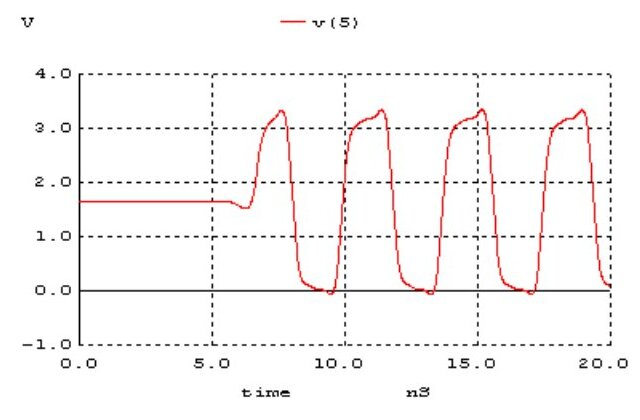

· EEM312
EEM312 Digital Electronics: Y4 Reports, the Ring Oscillator and the Regenerative Property of the Inverter
EEM312 – Sayısal Elektronik · 20.04.2011 · 16.10.2026
This post compares two reports written for the Y4: Ring oscillator and the regenerative property of the inverter experiment of the Başkent University EEM312 Digital Electronics software lab: one report from the spring 2011 semester (A) and one from 2014 (B). Both are reports by friends; personal information has been removed. The lab handout and the model table are in the post EEM312 software lab handouts Y4–Y8. The reports with personal information redacted, the netlists of the 2011 report, and the netlists of the 2017 version of the experiment are in the ZIP at the end of the post.
1–2. CMOS Inverter as a Subcircuit
The inverter is written as a subcircuit (.subckt) like the example in the handout; L/W = 1.2 µm/5.4 µm for the PMOS, 1.2 µm/1.8 µm for the NMOS, supply 3.2 V. The test circuit from report B (model lines shortened):
.subckt inv 1 3
M1 3 1 0 0 MOSN W=1.8u L=1.2u NRS=0.333 NRD=0.333
M2 3 1 2 2 MOSP W=5.4u L=1.2u NRS=0.333 NRD=0.333
CL 3 0 0.1P
VDD 2 0 3.2V
.ends
vin 1 0 Pulse(0 3.2 0 1n 1n 100n 200n)
xinv1 1 2 inv
.control
TRAN 1NS 200nS
plot v(2) v(1)
.endcPropagation delays measured in the test circuit (0.1 pF load):
| Report | t_pHL | t_pLH | t_d |
|---|---|---|---|
| A | 1.25 ns | 1.15 ns | 1.2 ns |
| B | 1.630 ns | 1.62 ns | 1.625 ns |
When the input is low, the PMOS conducts, the NMOS is cut off, and the output is pulled up to V_DD (low-to-high transition); when the input is high, the opposite happens. The choice W_p/W_n = 3 brings the delays of the two transitions close to each other.
3. Cascaded Inverters and the Regenerative Property
In the DC analysis of the cascaded inverters (nodes A, B, C and V_O), the transition region of the VTC becomes steeper at each stage. The explanation common to both reports: since the gain in the transition region of the inverter's VTC is greater than 1 and is less than 1 in the other regions, an input that has been degraded from its nominal value gets slightly closer to the rail-to-rail levels (V_DD and ground) with each inversion. This property is called the regenerative property.
In the transient analysis (input Pulse(0 3.2 0 1n 1n 100n 200n)), the accumulated delays up to each node:
| Node | A: t_pHL | A: t_pLH | A: t_d | B: t_pHL | B: t_pLH | B: t_d |
|---|---|---|---|---|---|---|
| A | 0.5 ns | 0.6 ns | 0.55 ns | 0.456 ns | 0.42 ns | 0.438 ns |
| B | 0.8 ns | 0.7 ns | 0.75 ns | 0.803 ns | 0.815 ns | 0.809 ns |
| C | 1.1 ns | 1.3 ns | 1.2 ns | 1.202 ns | 1.166 ns | 1.184 ns |
| V_O | 1.4 ns | 1.6 ns | 1.5 ns | 1.56 ns | 1.569 ns | 1.56 ns |
Each stage adds about 0.35–0.4 ns of delay. When a 5 MHz sine wave with a 1.6 V offset and 1 V amplitude (sin(1.6 1 5e6 0 0)) is applied to the input, the sine wave also turns, after a few stages, into a square wave swinging fully between ground and the supply.
4. Ring Oscillator
When the output of the last of the five inverters is connected to the input of the first, the circuit oscillates on its own: because the number of inverters is odd, there is no stable state; the input level flips after a time equal to the delay of the inverters, and this repeats continuously. The waveforms A(t), B(t) and C(t) are inverted and shifted versions of one another; it looks as if the signal is travelling around the ring.

| Condition | A: period | A: frequency | B: period | B: frequency |
|---|---|---|---|---|
| Unloaded | 3.8 ns | 260 MHz | 3.775 ns | 264.9 MHz |
| 100 fF on each inverter | 15.5 ns | 60 MHz | 15.2 ns | 65.79 MHz |
Since the period of a ring oscillator is T = 2·N·t_p (N = 5 stages), in the unloaded case t_p ≈ 3.8 ns/10 ≈ 0.38 ns per stage; this is consistent with the stage delays measured in Section 3. When 100 fF of load is added to each inverter, the stage delay increases by roughly a factor of four, and the frequency drops by the same ratio: the load directly limits the speed of the circuit.
Note: In report A, T = 15.5 ns gives f = 1/T ≈ 64.5 MHz; the report rounds it to 60 MHz. For the unloaded case as well, 1/3.8 ns ≈ 263 MHz.